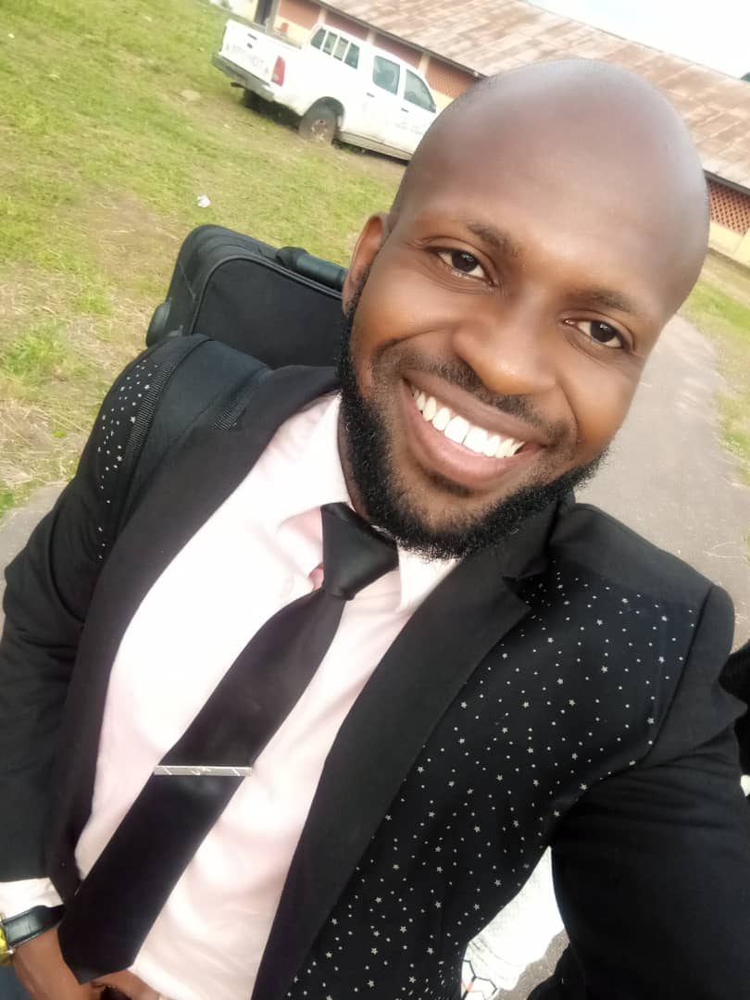

My Resume

Objective Statement
Detailed, focused and highly motivated computer scientist with expertise in data science, programming language,
data analysis and artificial intelligence algorithms. Passionate in data science research with a focus on data
mining using Weka, machine learning and artificial intelligence to identify data patterns
Education
- Master of Science, Computer Science (in view)
- University of Ibadan, Oyo State, Nigeria February 2022-present
- Bachelor of Engineering, Computer Engineering
- Ekiti State University, Ado-Ekiti, Ekiti State, Nigeria January 2011- July 2016
Work experience
Data analyst
IT department, Oyo State College of Nursing, Eleyele, Ibadan, Oyo State, Nigeria
- Design organizational solutions for computer files, business and financial records
- Use of analytics on research results using SPSS Version 21(descriptive and inferential analysis) to further research
- Maintenance and management of the College database for improved performance
- Assist principal investigators and nursing students during research and proofread research papers
- Responsible for maintenance of the College computer-based test center
Computer Engineer
Foretrust Digital Consulting Limited, Independence Layout, Enugu, Enugu State, Nigeria
- Assisted in the build-up of local area networks and maintenance of the computer-based test center in the company
- Assisted in the networking of computers to aid daily efficiency
- Assisted in troubleshooting computer systems and implementing creative and innovative ideas for better throughput
- Mentored a group of interns on graphic designs using Adobe Photoshop and the algorithm of programming languages (Java programming language)
- Responsible for maintenance of the College computer-based test center
IT Personnel (National Youth Service Corps)
National Youth Service Corps, Accounts Department, Enugu State, Nigeria
- Prepared payment schedule data of corps members state allowance on Microsoft Excel spreadsheet and Access database
- Presented written correspondence in the State account department with the use of computer application software
- Assisted in troubleshooting computer systems and installing computer application software for easy running of the department
Skills
- Python programming language
- Data science and analytics
- Web development
- Graphics design
- Proficient computer literacy (Microsoft word, MS PowerPoint, MS Excel)
Online Certifications
- IOT masters class
- Pantech pro labs India Pvt ltd, July 2022
- Data science masters class
- Pantech pro labs India Pvt ltd, March 2022
- Learning Excel: Data Analysis
- Introduction to SPSS
- University of Ibadan, March 2021